Publications
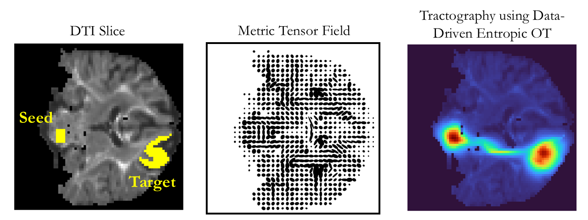
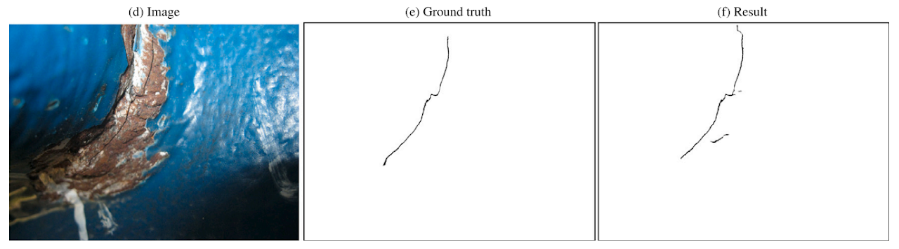
Loss function inversion for improved crack segmentation in steel bridges using a CNN framework
Automation in Construction, 2025
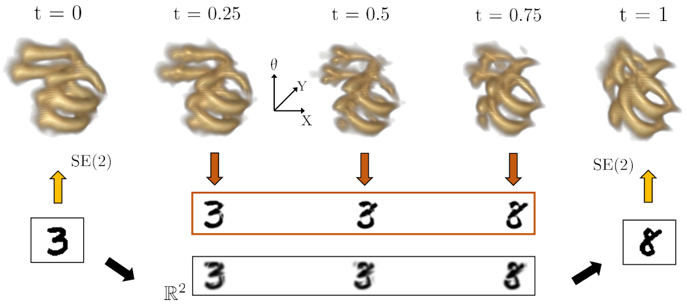
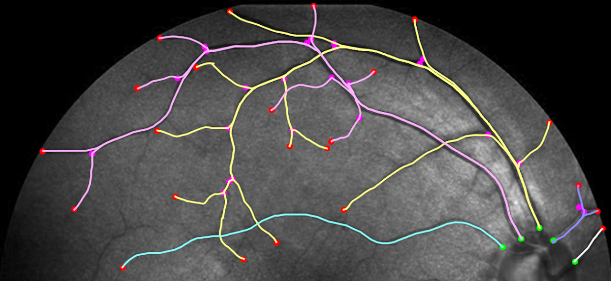
Geodesic Tracking via New Data-driven Connections of Cartan Type for Vascular Tree Tracking
Journal of Mathematical Imaging and Vision (JMIV), 2024
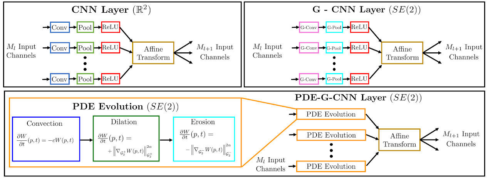
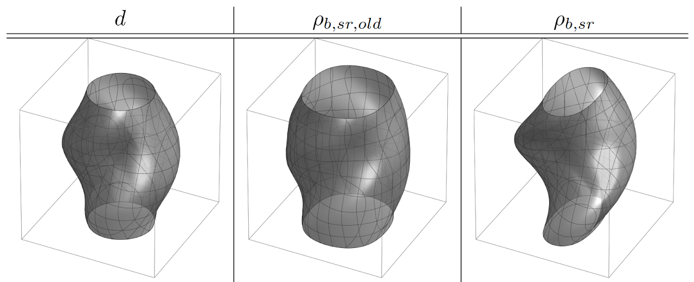
Analysis of (sub-) Riemannian PDE-G-CNNs
Journal of Mathematical Imaging and Vision (JMIV), 2023
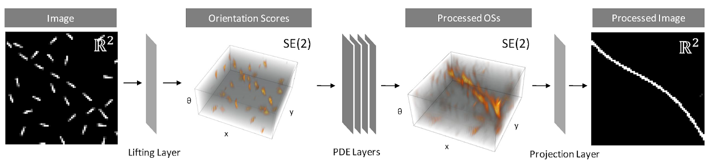
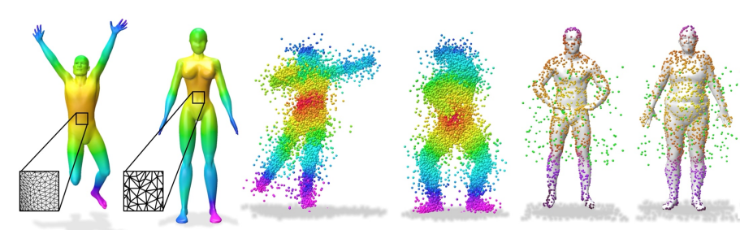
Implicit Field Supervision for Robust Non-Rigid Shape Matching
European Conference on Computer Vision (ECCV) 2022 (oral presentation)
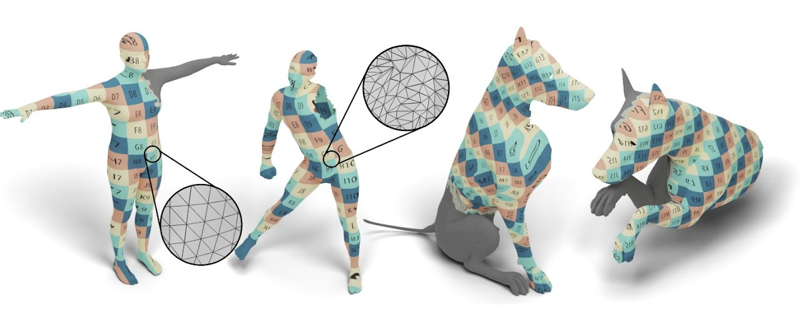
DPFM: Deep Partial Functional Maps
International Conference on 3D Vision (3DV) 2021 (oral · Best paper award)
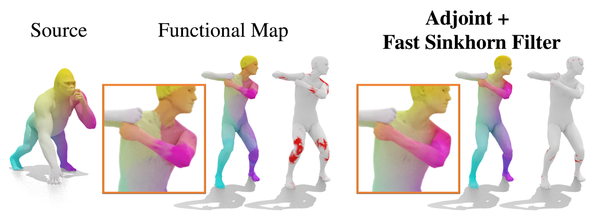
Fast Sinkhorn Filters: Using Matrix Scaling for Non-Rigid Shape Correspondence with Functional Maps
IEEE Conference on Computer Vision and Pattern Recognition (CVPR) 2021
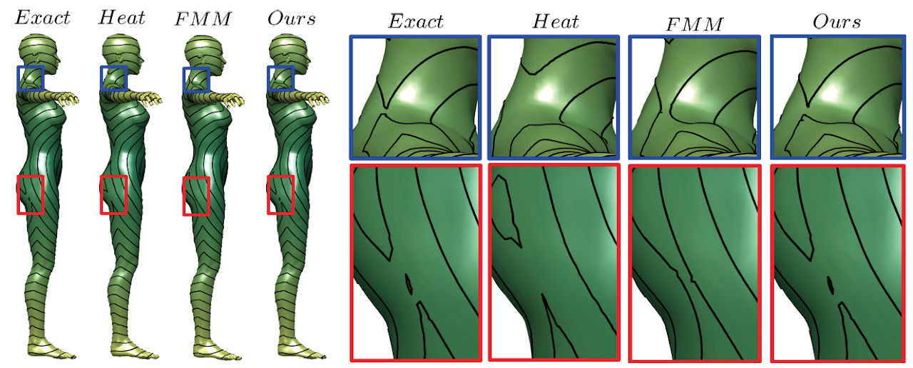
Deep Eikonal Solvers
International Conference on Scale Space and Variational Methods in Computer Vision (SSVM) 2019 (Best paper award)
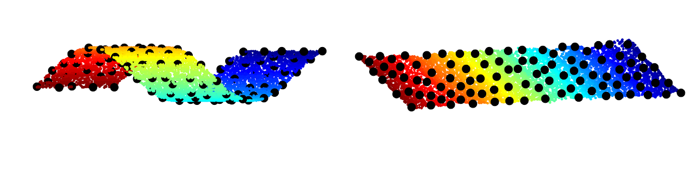
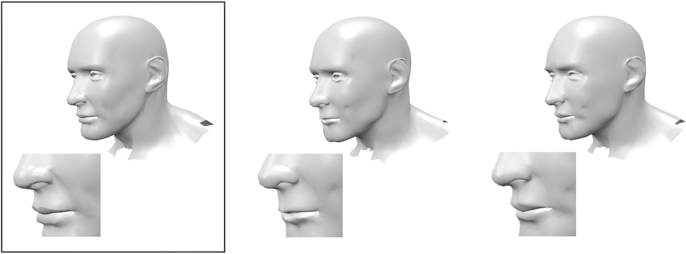
Sparse Approximation of 3D Meshes using the Spectral Geometry of the Hamiltonian Operator
Journal of Mathematical Imaging and Vision (JMIV), 2018
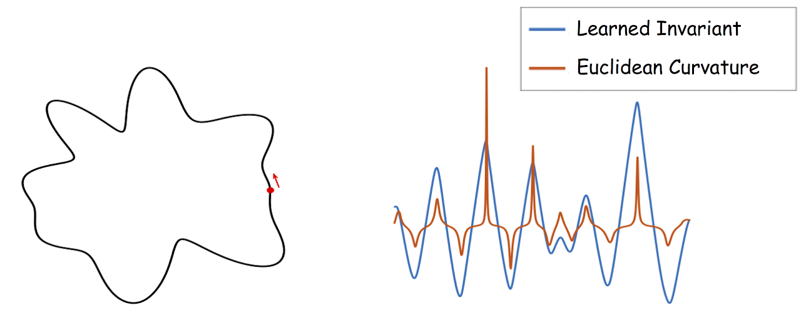
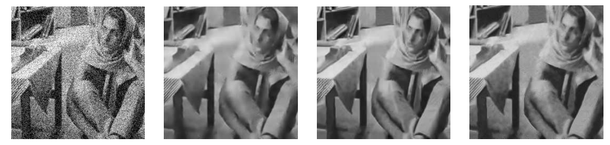
Symmetric Smoothing Filters from Global Consistency Constraints
IEEE Transactions on Image Processing, 2015
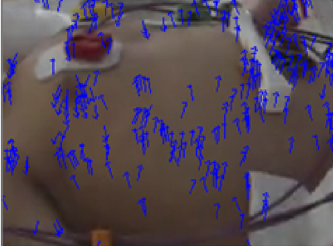
Camera based respiration rate of neonates by modeling movement of chest and abdomen region
IEEE - International Conference on Signal Processing and Communications (SPCOM) 2016
Theses
Learning for Numerical Geometry
PhD Thesis, Faculty of Computer Science, Technion - Israel Institute of Technology, Haifa - Israel, 2019
Using Global Consistency Constraints For De-Noising Of Natural Images
Masters Thesis Report, Department of Electrical Engineering, Indian Institute of Science, Bangalore - India, 2013
Book Chapters
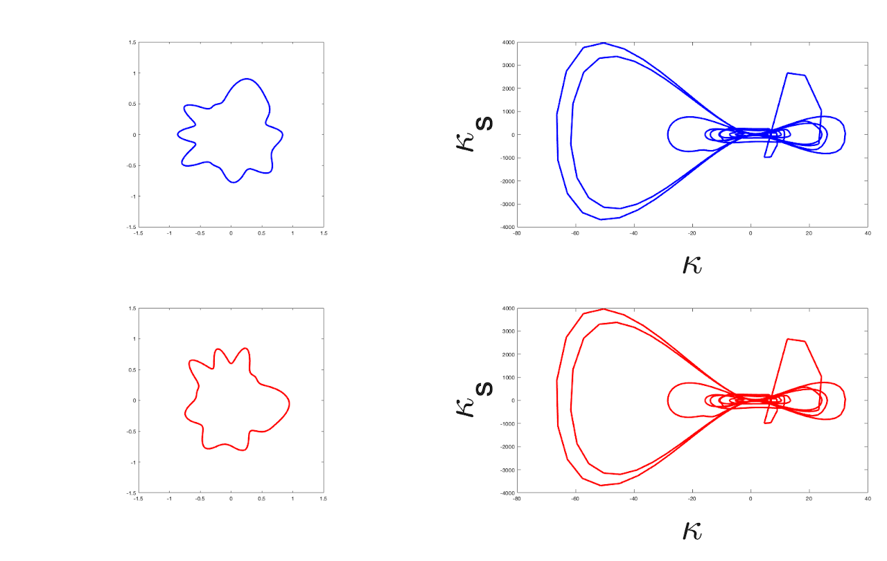
On Geometric Invariants, Learning, and Recognition of Shapes and Forms
Springer - Handbook of Variational Methods for Nonlinear Geometric Data - 2020
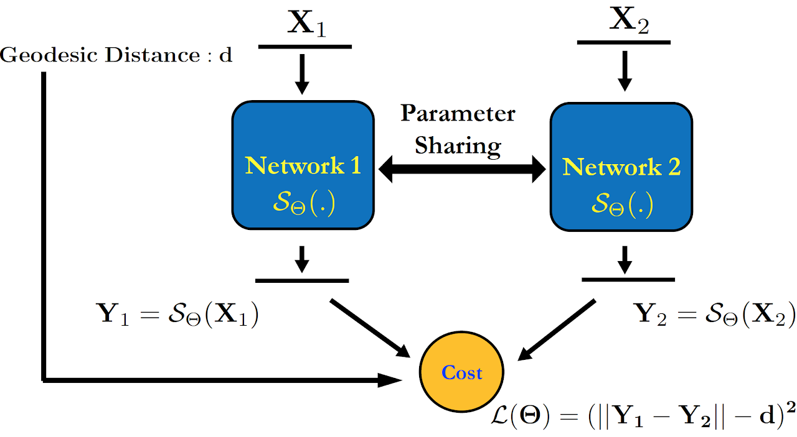
Geometric Learning: Deep Metric Learning for Numerical Geometry
Vision, Image Processing and Computational Imaging: 20 Years of Teaching and Research at the Jacobs Technion-Cornell Institute, 2023